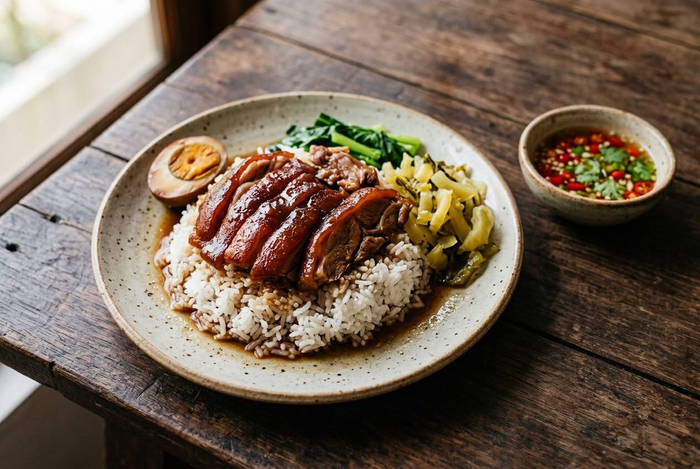

Pork leg fried until the skin tightens, braised in palm-sugar caramel with cinnamon and star anise, rested overnight, reheated. The rest is the recipe.

Khao kha mu arrived with Teochew Chinese migrants and became one of Bangkok's defining plates: rice under a slice of braised pork leg, skin shimmering, a braised egg, pickled mustard greens, and the sour chilli-garlic vinegar that cuts through all that fat.
The benchmark is Charoen Saeng Silom — open since 1959, three generations, Michelin Guide five years running. Its rules are famous: front legs only, and the shop closes in the afternoon to start braising tomorrow's legs. Its signature nobody copies: the leg is served beside the rice, never piled on top, so the rice never goes soggy. The recipes agree on the deeper rule — TrueID's shop recipe rests the pot twelve hours minimum, and the home cooks put it plainly: leave it overnight, the more you reheat it the richer it gets. This is the only dish in the series that is deliberately better the day after you make it.
| Thai | English | Amount |
|---|---|---|
| ขาหมู | Pork leg — front leg preferred | 1 |
| น้ำตาลปี๊บ | Palm sugar (for the caramel) | 6 tbsp |
| กระเทียม | Garlic | 20 g |
| พริกไทยเม็ด | Peppercorns | 1 tbsp |
| รากผักชี | Coriander roots | 10 g |
| อบเชย | Cinnamon sticks | 30 g |
| โป๊ยกั๊ก | Star anise | 1 tbsp |
| ชวงเจีย | Sichuan peppercorns (optional) | 1 tbsp |
| เห็ดหอมสด | Fresh shiitake mushrooms | 100 g |
| ซีอิ๊วขาว | Light soy sauce | 18 tbsp |
| ซอสหอยนางรม | Oyster sauce | 3 tbsp |
| น้ำเปล่า | Water | 2.5 litres |
| ไข่ต้ม | Boiled eggs, peeled | 5 |
| ผักกาดดอง | Pickled mustard greens (1 head) | ~300 g |
| Thai | English | Amount |
|---|---|---|
| พริกแดงจินดา | Fresh red chillies | 30 g |
| กระเทียม | Garlic | 10 g |
| เกลือ | Salt | 1 tsp |
| น้ำตาลทราย | Sugar | 1 tbsp |
| น้ำส้มสายชู | Rice vinegar | 6 tbsp |
Front or hind leg. Charoen Saeng uses front legs only; the shop recipe above starts with a hind leg. Both work — front has more skin and gelatine.
Phalo powder. The modern shortcut spice blend, or nothing at all — the ancient method runs on caramel, garlic, pepper, coriander root, cinnamon and star anise alone.
Fry or coat. Some shops fry the leg until the skin tightens; home cooks often coat it in the caramel instead. Both end tender; the fry holds shape better.
Soy balance. Light-soy lead (shop) against dark-sweet-soy lead (home). The caramel is the constant.
The rest. Shops rest overnight without exception; home recipes allow same-day. Overnight is always better.
This recipe is translated from the following Thai-language sources. Where they disagree, we've said so.
1. Michelin Guide Thailand — "เจริญแสงสีลม" (Charoen Saeng Silom, Bangkok; since 1959, 3 generations) — guide.michelin.com
2. TrueID (28 May 2020) — "แจกสูตร ข้าวขาหมู ขาหมูพะโล้ พร้อมผักดองและน้ำจิ้มรสเด็ด" (shop recipe with rest and condiments) — food.trueid.net
3. Kapook (ครัวตุ๊กตา) — "พะโล้ขาหมู สูตรขาหมูน้ำดำเข้มข้น ทิ้งไว้ข้ามคืนยิ่งอร่อย" (home method) — cooking.kapook.com
4. Bloggang (11 Oct 2007) — "ขาหมูและไข่พะโล้ (โบราณ)" (ancient method, caramel colour, no phalo powder) — bloggang.com